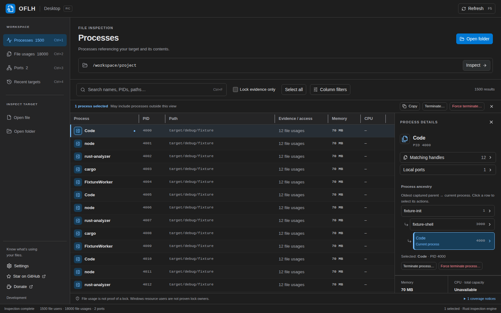
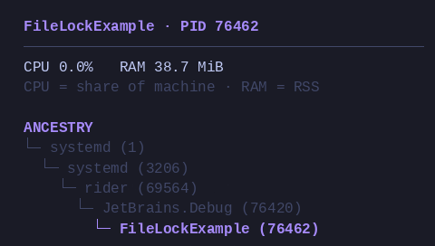

oflh.
Open File Lock Handle
Find what’s using your file or port.
Desktop and terminal app that shows which process holds a file, folder, or port.


Desktop and terminal app that shows which process holds a file, folder, or port.